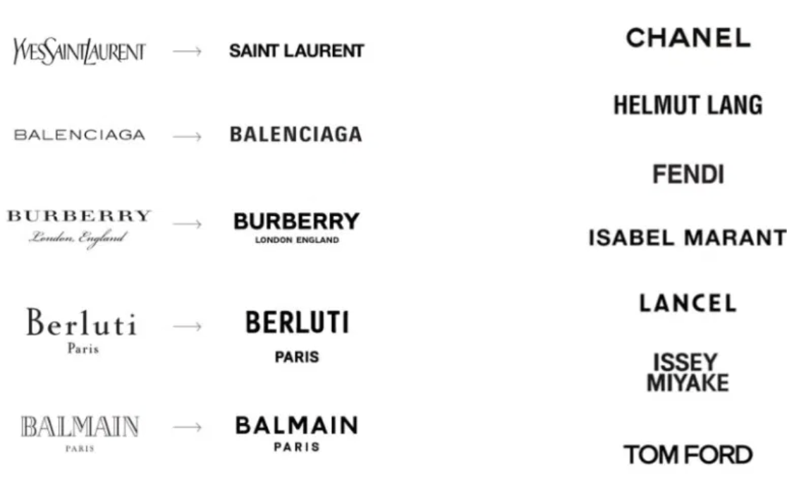

Case Study · Research Phase
Comparative Analysis: Luxury E-Commerce "Sameness"
Part of the Burberry Trench
Navigation Redesign · 2026
Before scoping the Burberry redesign, I audited five luxury fashion sites to check whether "blanding" — a term originally used for converging logo design — also shows up in the actual shopping experience, not just the visual identity.

Fig. 1 — Logo convergence across luxury houses, via TheFashionLaw.
What I checked, across five brands
- Nav style
- Huge mega-menu, 6+ sub-categories per gender
- Buy the clothes online?
- Yes — full cart + checkout
- Homepage feel
- Seasonal campaign banners, template-y "shop the look" grid
- UX quirk I found
- Trench coats reachable via two inconsistent nav paths — one shows no style breakdown, the other lists 6 style names with no visual comparison
Chanel
- Nav style
- Mega-menu, but Fashion sits apart from "shop online" categories
- Buy the clothes online?
- No — Ready-to-Wear & Handbags are "Exclusively in Boutiques"; only Fragrance/Makeup/Skincare/Eyewear are shoppable
- Homepage feel
- Editorial/campaign-first, funnels toward "Book an Appointment"
- UX quirk I found
- Core product (the clothes) can't be bought online at all — a genuine counter-example to blanding
Fendi
- Nav style
- Mega-menu, nearly identical structure to Burberry
- Buy the clothes online?
- Yes — full cart + checkout
- Homepage feel
- Campaign banner, then "Curated for You" product carousel
- UX quirk I found
- The featured homepage carousel showed mostly Sold Out items at the top
Balmain
- Nav style
- Standard mega-menu, similar pattern to the above
- Buy the clothes online?
- Yes — full cart + checkout, offers Klarna
- Homepage feel
- Campaign banner + "shop now" CTAs — most standard e-commerce feel of the group
- UX quirk I found
- Closest to a normal shopping experience — arguably the least "blanded" site audited
Balenciaga
- Nav style
- Minimal, deliberately stripped-down nav
- Buy the clothes online?
- Yes — full cart + checkout
- Homepage feel
- Reported to be intentionally sparse / brutalist
- UX quirk I found
- Not directly audited in this pass — publicly known for its minimal aesthetic
What this tells me
- Blanding isn't just visual — it's structural. Burberry, Fendi, and Balmain share the same skeleton: mega-nav → campaign hero → shop-the-look tiles → PDP → cart → checkout. Cover the logos, and the layouts are nearly interchangeable.
- Chanel is the exception, not the rule. It deliberately keeps its core fashion product off the "buy now" internet entirely — worth noting as contrast rather than treating every brand as equally "blanded."
- Each brand has one specific, nameable flaw — not a vague "feels generic" complaint. That's what makes this a testable design problem rather than an aesthetic opinion, and why Burberry's nav-fragmentation issue became the deep-dive for the full PRD.
This audit is the research phase behind the Burberry Trench Navigation Redesign PRD, which scopes the fix for the nav-fragmentation issue flagged above.
Concept research exercise based on publicly available e-commerce sites — not affiliated with or endorsed by Burberry, Chanel, Fendi, Balmain, or Balenciaga.